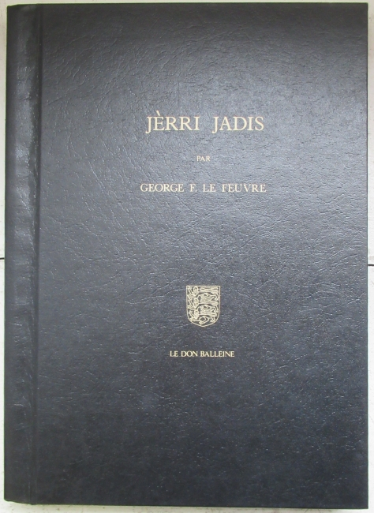

Le Ménage ès Feuvres,
St Ouen
Le 13 d'octobre, 1973
Moussieu l'Rédacteu,
Né v'là don man livre, "Jèrri Jadis" publiyé et sus l'marchi. I' peut êt' acaté à la boutique à livres Lexicon nunmétho septante-deux dans la rue "King Street" en ville, et y'a mème un moussieu tch'a un bieau vièr nom Jèrriais, Aspliet (Asplet) dans chutte boutique-là tchi peut vouos sèrvi. Nou n'en trouve pon fort à ch't heu, d'gens auve des vrais nom Jèrriais, à sèrvi dans les boutiques en ville.
Un homme me disait l'aut' jour: "Ou d'vez êt' riches vous et l'Sieur Le Maistre, à écrithe et vendre des livres". Mais ch'n'est pon l'cas - j'n'en r'chévons pon un sou. Man livre est publiyé par lé Don Balleine Trust tch'a publiyé l'fanmeux Dictionnaithe Jèrriais-Français du Docteu Fraînque Le Maistre, et pus dreinement lé "English-Jersey Language Vocabulary" composé par lé Docteu Albert L. Carré en collaborâtion auve lé Docteu L'Maistre et l'Député Philip M. De Veulle. V'la tchi veurt dithe qué ch'n'est pon l's auteurs tchi r'chévent les sou pour la vente des livres. Ch'est l'Don Balleine Trust tchi subit les frais d'publicâtion – des frais tch'i' faudrait êt' riches pour pouver les payi sé-mème, et ch'est tout naturel qué l'"Trust" èrchéve lé produit d'la vente. La publicâtion d'un livre couôte ênormément ches jours.
Ou-s-allez sans doute trouver tchiques èrreurs dans l'livre. Nou-s-a bieau êprouver à les vaie en corrigeant l's êpreuves, nou-s-en manqué tréjous tchich'eunes, mais comme j'l'ai souvent dit l'chein tchi n'a janmais fait d'èrreurs n'a janmais êprouvé à faithe grand' chose.
Quant à mé, jé n'vai pon rein d'fanmeux dans l'êcrituthe dé man livre. Ch'n'est qu'eune affaithe dé mett' mes pensées sus du papi, et comme ch'est tréjous en Jèrriais qué j'pense ch'est en Jèrriais tch'i' faut l's êcrithe et nouos y v'la. Un tas d'pensées couvrent un tas d'pages et un tas d'pages font un livre. L'affaithe d'êcrithe un dictionnaithe est aut' chose et ch'est l'Docteu Fraînque Le Maistre tch'i' faut loûser pour eune tâche formidabl'ye dé mème. Pour faithe un dictionnaithe i' faut aver eune connaîssance parfaite dé la langue et d'la grammaithe, mais ch'n'est pon tout ch'tch'i faut. I' faut connaître eune deuxieme langue à fond pour explyitchi dans chutte langue-là, tch'est quél'mot Jèrriais sîngnifie. Mais l'Docteu L'Maistre fait acouo mus. Dans touos les cas d'noms d'însectes, paîssons, pliantes et flieurs, i' donne lé nom Latîn dans châque cas, et souvent l'nom Angliais étout. Né v'la chein qu'j'appelle êt' savant!
Mais r'vénant au sujet d' "Jèrri Jadis". Hardi des lettres tch'ont pathu dans la gâzette sont d'dans modifiées dans bein des cas viyant qué l'pâssage du temps amène des changements, et, comme nou peut s'y attendre, toutes mes lettres né pliaîsent pon à tout l'monde. J'n'ai pon 'couo veu la pèrsonne tchi peut s'vanter d'pliaithe à tous. J'm'èrsouveins qué dans l'temps qué j'tais à êcrithe d's articlyes au sujet des Jèrriais à La Côte et qu' j'êcrivis les noms des Jèrriais qué j'viyais sus les tombieaux dans les chînm'tchiéthes des églyises Anglyicannes et des tchiques chapelles Protestantes là-bas eune pèrsonne ichîn m'dit " Bah j'sis enn'yé d'liéthe vouos lettres entouorre des tombieaux à La Côte. Quandtchi qu' ou-s-allez nous écrithe tchique chose întéressant?" D'aut' côté j'viyais des gens tchi m'félicitaient. Eune femme mé dit: "Sav'ous bein qué j'n'avais janmais seu tch'est tch'était dév'nu dé m'n onclye Ph'lippe tchi s'en 'tait allé à La Côte quand j'tais p'tite fille? Et né v'la qué quand j'lius vouot' lettre dans la gâzette hièr au sé, j'vis tch'il est mort et entèrré dans l'chînm'tchiéthe dé Paspédgia, et qué l'tombé fut pliaichi sus sa sépultuthe par san fis Laïesse. J'ai don un couôsîn gèrmain là-bas et j'm'en vais li'êcrithe. J'enviêthai ma lettre à l'office des Robîns. Ch'est seux tch'i' séthont ou'est tch'il est!" J'rencontris un tas d' pèrsonnes tch'avaient veu les noms d'pathents et anmîns décédés parmi les cheins mentionnés comme étant înscrits sus les tombieaux à La Côte, et ch'est pour chutte raîson-là qu' j'ai fait sèrvi septante-trais pages dé man livre (pages 120 à 193) pour faithe un r'cord pèrmanent d'la description du pays et des noms Jèrriais sus les tombieaux d'ses chînm'tchiéthes.
Lé temps s'en va v'nîn – i' n'est p't-êt' pon trop êlouangni – qu' ches noms-là éthont dispathu, car i' y'a bein p'tit d'Jèrriais, nés en Jèrri (p't-êt' eune demié-douzaine), dé restant à La Côte, et les d'scendants des décédés des deuxième et traîsième généthâtions lus sont êtablyis dans d'aut' parties du Cannada et dans L's Êtats-Unis et un p'tit nombre sont mathiés parmi les Cannadgiens-Français et d'veinnent membres dé l'Églyise Romaine. Beintôt, i' n'y'étha pon assez d'Anglyicans pour garder lus églyises en allant, à l'exception d'deux ou trais.
J'espéthe qué si man p'tit livre n'a pon grand méthite comme affaithe littéthaithe, i' s'en va au mains contribuer san p'tit mio à prêsèrver la Langue Jèrriaise tchi dispathaît si vite du pâler d's habitants d'l'Île.
George d'La Forge
Viyiz étout: